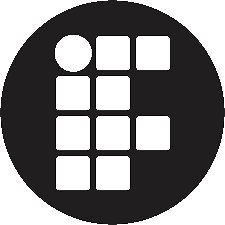

Erick Pires

Técnico em Informática - 2/4Desenvolvimento Fullstack / Microsoft 365 / Hardware Básico
Estou pronto para ajudar ou colaborar no seu projeto. Não hesite em perguntar!
Crio frequentemente novas aplicações e projetos.
</> Principais tecnologias que eu trabalho:
Sobre Mim
Técnico de Informática brasileiro, atualmente com foco em programação de aplicações para o Discord.
Minha jornada na programação começou em minha infância, aos meus 11 anos de idade.
Meu primeiro contato com uma linguagem de programção foi o Node.js, onde eu produzi aplicações para o Dicord usando discord.js.
Meus interesses:
Idiomas: